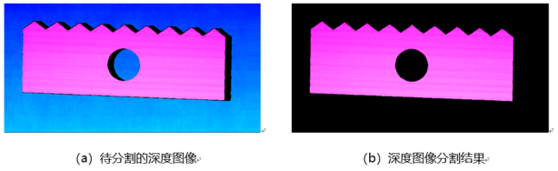
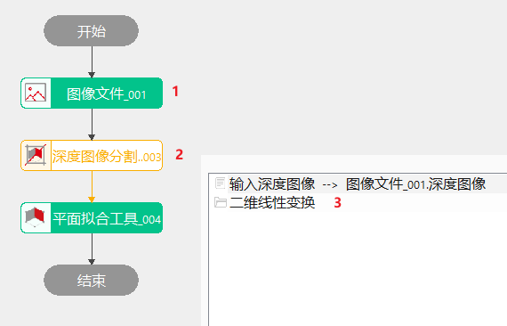
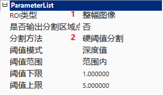
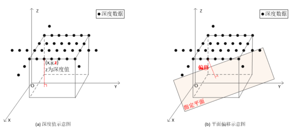
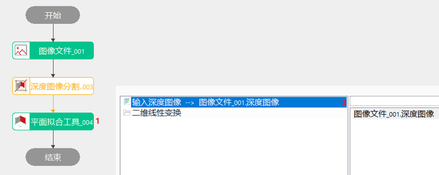

深度图像分割工具主要是将深度图像中感兴趣区域内的深度信息分割出来。图1所示为，将深度图像中的物体从背景中分割出来。

深度图像分割工具在3D项目，比如平面度检测、焊点检测中用于目标提取（如选定ROI以及阈值，提取出圆形焊点部分）或者预处理（去掉不需要的部分）。
深度图像分割工具根据深度图像的感兴趣区域以及所选定的分割模式以及分割依据，在深度图像的感兴趣区域内进行分割。


1）分割区域
深度图像中待分割的区域，目前支持全图，矩形，仿射矩形，圆形，椭圆和多边形。
2）分割模式
深度图像的分割方法大类，目前仅支持硬阈值分割模式。
3）硬阈值分割依据
硬阈值分割依据为对深度图像进行硬阈值分割时的基本判据。目前，硬阈值分割依据支持：深度值依据和平面偏移依据。如图2所示，深度值依据直接利用深度图像的深度值信息对图像进行分割，而平面偏移依据是利用深度图像的像素点到指定平面的偏移信息对图像进行分割。

4）阈值模式
对深度图像进行硬阈值分割时采用的阈值模式，通过指定阈值模式，可得到分割阈值的区间范围。阈值模式支持阈值范围内和阈值范围外两种，若给定的分割阈值1和分割阈值2分别为a和b（a≤b），则阈值范围内代表的分割阈值区间为[a, b]，阈值范围外代表的分割阈值区间为(-∞,a]U[b, +∞)。

| 现象描述 | 解决方法 |
|---|---|
| 分割不到想要的区域 | 看一下阈值模式选取是否正确、阈值范围是否设置正确 |
| 参数名称 | 参数说明 |
|---|---|
| ROI类型 | 分割区域，共5种：整幅图像、矩形ROI、仿射矩形ROI、多仿射矩形ROI、圆形ROI、椭圆形ROI。 |
| 分割方法 | 目前仅支持硬阈值分割。 |
| 是否输出分割区域点集 | 选择“是”，则ROI的分割区域输出点集结果；选择“否”，则不输出ROI的分割区域点集结果； |
| 阈值模式 | 共2种：深度值和平面偏移。选择“深度值”模式时，会根据“阈值范围内”参数，“阈值下限、上限”参数，选择/排除掉图像Z坐标在阈值范围内的点；选择“平面偏移”模式，则会根据“阈值范围内”参数，“阈值下限、上限”参数，选择/排除掉到某一个平面的距离在阈值范围内的点。 |
| 阈值范围 | 选择“阈值范围内”，则选择阈值范围内的点；选择“阈值范围外”，则排除阈值范围内的点，选取范围外的点；选择“全部”，则忽略阈值范围，选取全部点。 |
| 阈值下限 | 阈值范围的下限，取值范围为[-100, 100]，且小于等于硬阈值2，单位mm。 |
| 阈值上限 | 阈值范围的上限，取值范围为[-100, 100]，且大于等于硬阈值1，单位mm。 |
| 参数名称 | 参数说明 |
|---|---|
| 输出深度图像 | 输出深度图像的长宽和像素大小，以及深度数据参数。 |
| 输出ROI点集 | 输出分割区域点集结果 |
| 执行结果 | 工具执行结果 |
| 执行时间 | 工具执行时间 |
参见“\Samples\3D\深度图\深度图像分割工具.gvp”。